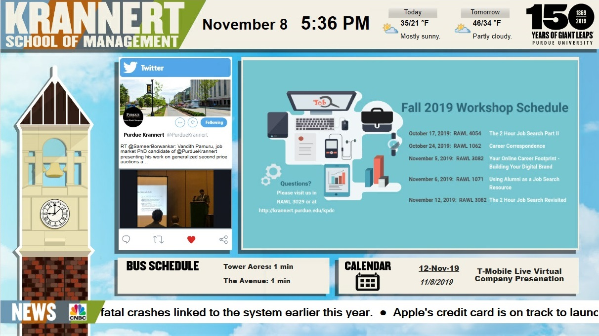
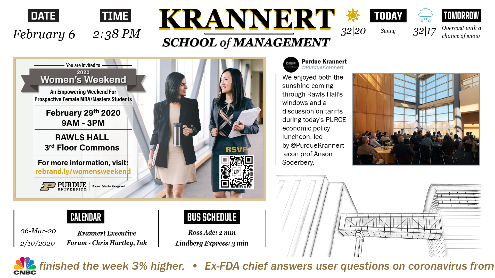
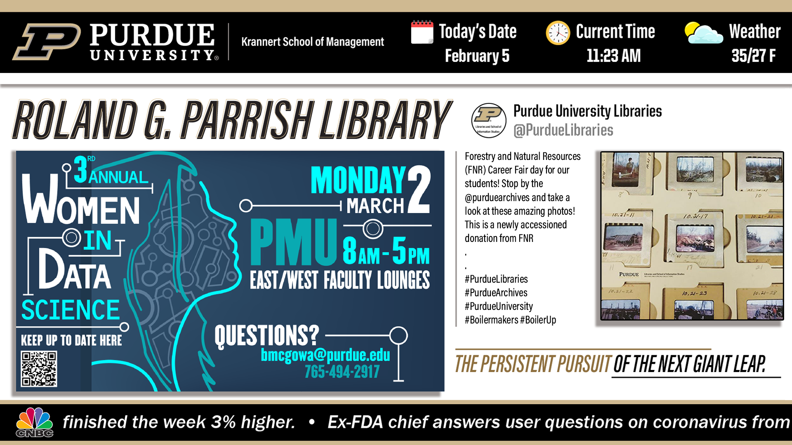

Krannert Digital Signage
Krannert was my first experience working within the structure and confines of a large company. As a designer, this meant having to work according to both the school's and Purdue's unique voice. Following the established branding guidelines was crucial. Towards the end of my time there, the branding guidelines changed drastically, which was a significant change my team and I had to weather and lead the way in many respects.
Krannert's Digital Signage was made up of templates, which would display all necessary information. Within that, data feeds were responsible for filling content areas. This included social media and slides, the creation of which was entirely controlled by my team.
Illustration / Branding / Animation
Motion Graphic Slides
Slides were created in order to bring attention to upcoming events or important information. After creating primarily static slides in the beginning, I transitioned towards creating motion graphics in order to convey more information than previously possible, as well as draw more attention from passersby. This was a very important stepping stone in my creative development, as I was given an opportunity to showcase and grow my motion graphic skills in a professional environment.
Display Templates
These templates are created to house all the various content we would display to students and faculty. The types of content they display is dependent on their location in the building.

These templates were created to follow the new branding guidelines, and as such, incorporated new fonts, a more contained color pallette, and visual elements like the vertical lines and increased white space.


Course Video Templates
My team spearheaded a project promoting courses in Krannert that typically struggled to fill enrollment quotas, or had never been offered before. As opposed to creating slides/videos for each individual course, we would expedite the process by creating a select amount of templates themed around types of courses offered by the school. Then professors would choose the template that best fit their specific course, and we would customize it accordingly.
Video Express Intros
We also help run a green-screen room that professors can reserve to create pre-recorded lectures. They have the option to select a few different intros that play at the beginning of every video. Since Purdue and the Krannert School were undergoing a big rebranding project, the previous videos would need replacement. I helped design some new intros that not only followed this new guide, but also were a nice modern update to the previous ones.